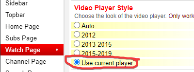

Extension Support
Some YouTube extensions may mess with PlayerTube, and many more might
if not reported on. If you'd like to help with finding & getting many
more extensions fixed,
feel free to report them on the GitHub page.
Here's the current list of extensions that currently work either with
or without manual configuration.
CustomTube
CustomTube has been one of the first extensions to need manual configuration. Below is a screenshot of what settings the user should set.

Go to the "Watch Page" tab in CustomTube's settings, scroll down to
"Video Player Size" and disable "Use Custom Player Size".
Also set "Video Player Style" to "Use current player" to be safe.
CustomTube also needed many CSS patches too (which does not need to
be done by the user).
YouTube Redux
Like CustomTube, YouTube Redux has similar settings that mess with the player's size.

Open up YouTube Redux's settings and uncheck the "Use small video
player" opinion.
And for some reason, YouTube Redux messes with the volume panel,
which is easily fixed with some CSS (which does not need to be
done by the user).